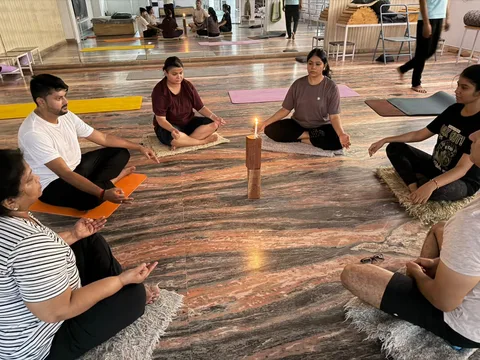
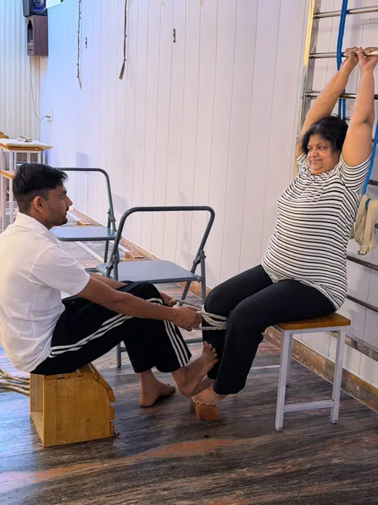
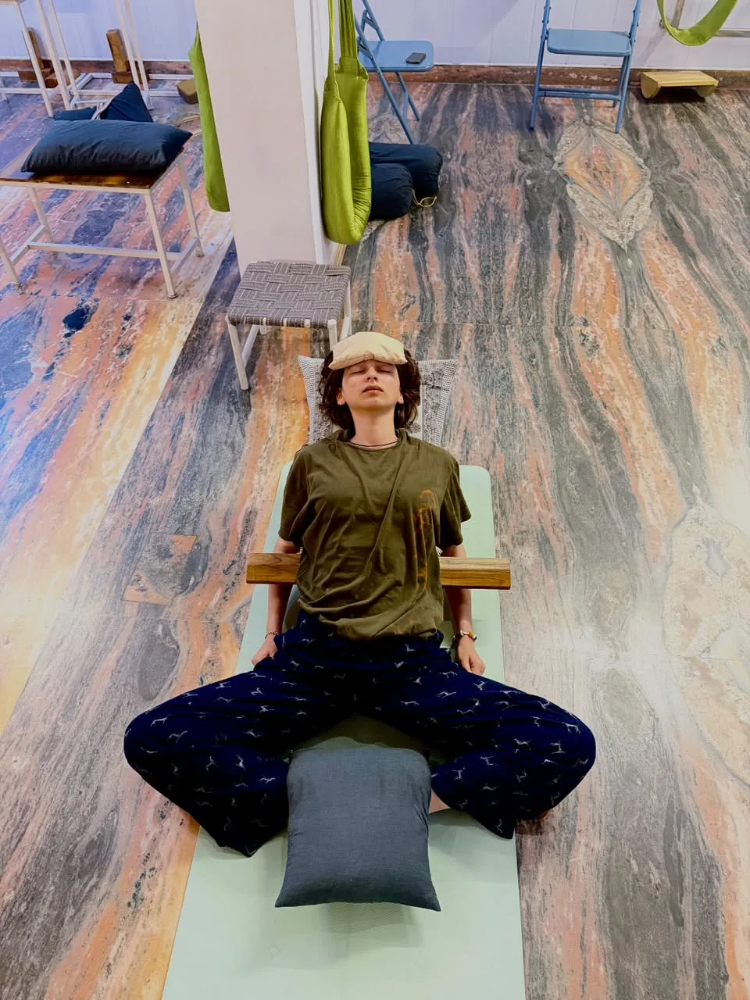
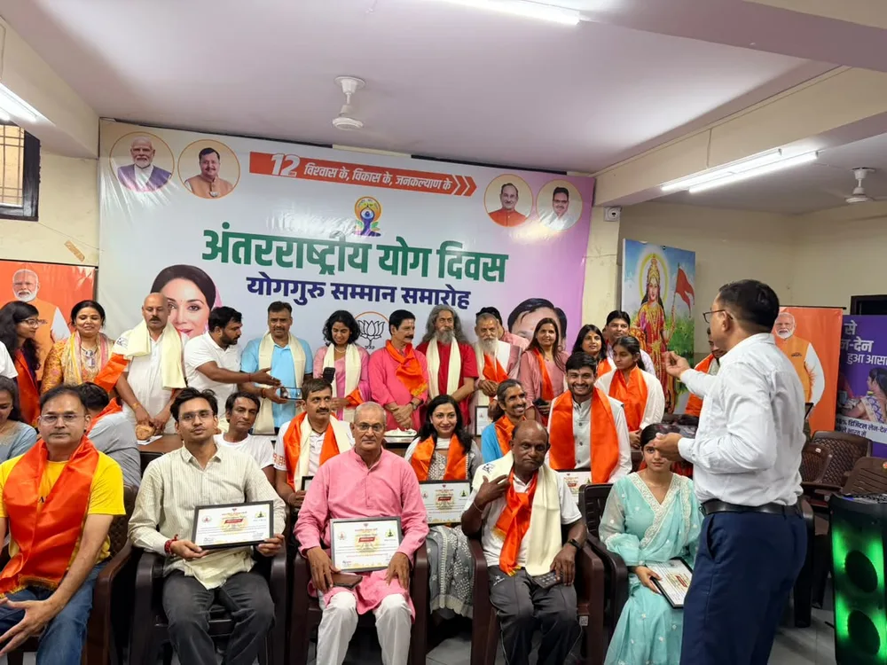
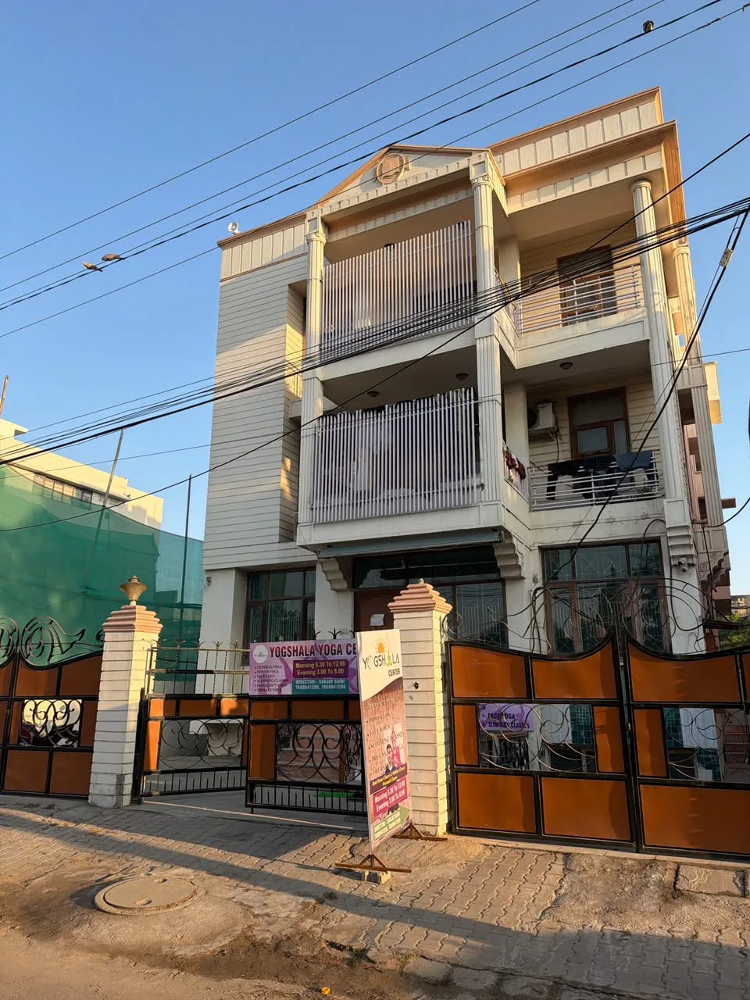

Getting started
Your First Yoga Class: What to Expect
Walking into a yoga studio for the first time can feel unfamiliar. A little preparation helps you arrive ready to learn, ask questions and settle into the experience.
Read article
Practice, people and small steps towards a mindful routine.

Walking into a yoga studio for the first time can feel unfamiliar. A little preparation helps you arrive ready to learn, ask questions and settle into the experience.
Read article
Chairs, bolsters and wall ropes are part of the Yogshala studio environment. They give instructors different ways to organise a practice and demonstrate how a pose can be approached.
Read articleA regular practice starts with making space in your week. You do not need a complicated schedule: a clear plan that fits your daily responsibilities is a useful beginning.
Read articleThe new gallery captures more than individual poses. It includes group practice, studio gatherings and shared celebrations, offering a glimpse of the people who make Yogshala a welcoming place to return to.
Read articleYour class format should fit the way your day works. Yogshala offers studio and live online options, so you can discuss your schedule and preferences with the team before choosing where to begin.
Read articleA regular practice starts with making space in your week. You do not need a complicated schedule: a clear plan that fits your daily responsibilities is a useful beginning.

Look at the parts of your week that are predictable. Pick a class time you can reach without constantly rushing from another commitment. Check current batch timings with the team before planning your week around a session.
Have your class clothes and essentials ready beforehand. For an online session, choose your space and check the connection in advance. Removing small last-minute tasks makes it easier to arrive on time and pay attention.
Rather than collecting difficult poses to try, speak with your instructor about what you are learning in class. Ask which parts deserve more attention and how to approach your next session. A routine can develop as your understanding grows.
An interrupted week does not have to end your routine. Check the next available class, contact the team if your schedule has changed and begin again with a manageable plan. Leave room for ordinary life in the schedule you create.
The new gallery captures more than individual poses. It includes group practice, studio gatherings and shared celebrations, offering a glimpse of the people who make Yogshala a welcoming place to return to.

A group class brings people with different levels of experience into one space. You may arrive with your own goals while sharing the rhythm of a session with others. There is room to observe, ask questions and learn at your own pace.
Our photographs show participants practising together and gathering around yoga events. These moments tell another part of the studio story: meeting familiar faces, sharing an interest and taking time to be present together.
You do not have to attend with a friend or already know someone at the studio. Introduce yourself to the team and let them know you are visiting for the first time. Ask about the class format and where to begin.
Browse the gallery for a look inside the studio, and contact Yogshala for details of upcoming classes or gatherings. Event photographs document shared moments; the team can confirm what is currently on the calendar.
Your class format should fit the way your day works. Yogshala offers studio and live online options, so you can discuss your schedule and preferences with the team before choosing where to begin.

A studio gives you a dedicated place to practise, with the instructor present in the room. For an online class, you arrange a suitable space at home and join through your device. Consider which environment lets you give the class your attention.
For a studio visit, allow time for travel and arrival. For online practice, check your device, internet connection and the joining instructions beforehand. Position the camera so the teacher can see you as requested during the session.
Do not assume that everything shown in a studio photograph is needed at home. Ask the instructor what your chosen class requires and whether the available space and equipment suit that session.
Check current timings, package options and class suitability before enrolling. If your routine changes, speak with Yogshala about the available alternatives. A short conversation can help you choose a format that works with your week.
Chairs, bolsters and wall ropes are part of the Yogshala studio environment. They give instructors different ways to organise a practice and demonstrate how a pose can be approached.
A photograph often shows only the final shape of a pose. In class, the setup matters too: where a chair sits, how a support is positioned and what the instructor asks a student to focus on. A prop is part of that teaching process.
A chair can provide a point of support, while a bolster creates a raised resting surface. The way these are used depends on the class and the individual. Ask the instructor to demonstrate the arrangement before trying it yourself.
Our gallery includes photographs of practice with wall ropes. These setups require instruction and suitable equipment. A photo is a glimpse of a session rather than a guide to recreating the position at home.
If you are curious about a prop in the gallery, bring your question to class. The teacher can explain its purpose in that particular session and discuss whether a similar setup belongs in your practice.
Walking into a yoga studio for the first time can feel unfamiliar. A little preparation helps you arrive ready to learn, ask questions and settle into the experience.
Choose comfortable clothes that let you move freely. Bring water and check with the team about mats and any equipment you need. Arriving a few minutes early gives you time to find the studio, put away your belongings and meet your instructor.
Tell the teacher that this is your first class. Share what you hope to explore and mention any movement limitations before practice begins. You do not need to know pose names or match the person next to you. The class is a place to learn.
Watch demonstrations, listen to the instructions and ask when something is unclear. You can pause rather than rush to keep up. If a movement is uncomfortable, tell the instructor so they can help you choose an appropriate alternative.
Take a moment to notice which parts of the class felt familiar and which raised questions. Speak with the teacher about a suitable next class. Your first session is an introduction, so give yourself time to get comfortable with the setting and the teaching style.